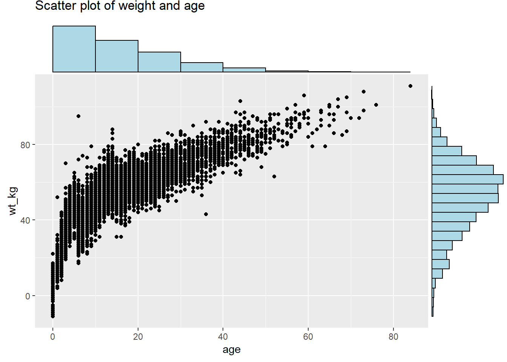
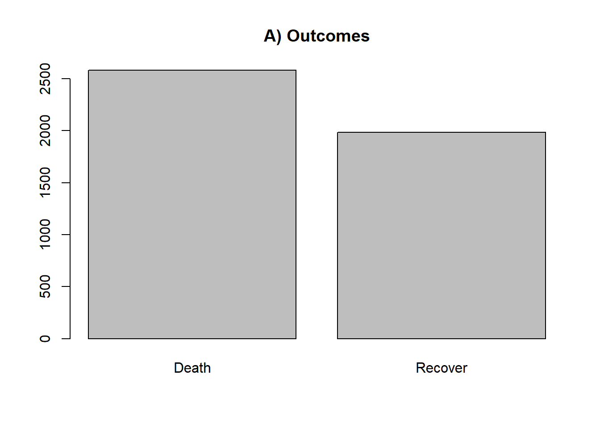

31 Tracer des données catégorielles
Dans cette page, nous couvrons l’utilisation de base des fonctions ggplot2 pour visualiser des données discrètes/catégorielles. La fonctionnalité supplémentaire de ggplot2 par rapport à base R signifie que nous la recommandons pour des visualisations prêtes à être présentées.
Nous abordons également la visualisation des distributions de valeurs catégorielles, comme les comptages et les proportions.

31.1 Préparation
La préparation comprend le chargement des paquets pertinents, à savoir ggplot2 pour les exemples couverts ici. Nous chargeons également les données.
Chargement des paquets
Ce morceau de code montre le chargement des paquets requis pour les analyses. Dans ce manuel, nous mettons l’accent sur p_load() de pacman, qui installe le paquet si nécessaire et le charge pour l’utiliser. Vous pouvez également charger les paquets installés avec library() de base R. Voir la page sur [R basics] pour plus d’informations sur les paquets R.
# Chargement des paquets que nous utiliserons à plusieurs reprises
pacman::p_load(
rio, # importation de fichiers
here, # fichiers de localisation
janitor, # tables
tidyverse) # ggplot2, dplyr, et forcats entre autres Importer les données
Pour commencer, nous importons la linelist nettoyée des cas d’une épidémie d’Ebola simulée. Si vous voulez suivre, cliquez pour télécharger la linelist “propre” (en tant que fichier .rds). Importez des données avec la fonction import() du paquet rio (elle gère de nombreux types de fichiers comme .xlsx, .csv, .rds - voir la page Importer et exporter des données pour plus de détails).
# Importez la liste de cas
linelist <- import("linelist_cleaned.rds")Les 50 premières lignes de la linelist sont affichées ci-dessous.
Nettoyer les colonnes
Pour les exemples de cette section, nous utilisons la linelist Ebola simulée, en nous concentrant sur les variables catégorielles hospital, et outcome. Celles-ci doivent être de la bonne classe et du bon format.
Regardons la colonne hospital, d’abord avec class() de base R, et avec tabyl() de janitor.
# Affiche la classe de la colonne hospital - on peut voir que c'est un caractère
class(linelist$hospital)## [1] "character"# Regardez les valeurs contenues dans la colonne hospital
linelist %>%
tabyl(hospital)## hospital n percent
## Central Hospital 454 0.07710598
## Military Hospital 896 0.15217391
## Missing 1469 0.24949049
## Other 885 0.15030571
## Port Hospital 1762 0.29925272
## St. Mark's Maternity Hospital (SMMH) 422 0.07167120Nous pouvons voir que les valeurs contenues dans la colonne sont des caractères, car ce sont des noms d’hôpitaux, et par défaut ils sont classés par ordre alphabétique. Il existe des valeurs “autres” et “manquantes”, que nous préférerions voir figurer dans les dernières sous-catégories lors de la présentation des ventilations. Nous transformons donc cette colonne en facteur et la réorganisons. Ce point est traité plus en détail dans la section sur la gestion des données Facteurs.
# Convertir en facteur et définir l'ordre des niveaux pour que "Other" et "Missing" soient les derniers.
linelist <- linelist %>%
mutate(
hospital = fct_relevel(hospital,
"St. Mark's Maternity Hospital (SMMH)",
"Port Hospital",
"Central Hospital",
"Military Hospital",
"Other",
"Missing"))Assurer une structure de données correcte
Comme nous l’avons vu dans le “Graphiques en barres”Pour afficher les fréquences et les distributions des variables catégorielles, vous pouvez créer des diagrammes basés sur :
- Les données de la linelist, avec une ligne par observation, ou bien.
- Un tableau récapitulatif basé sur la liste de lignes, avec une ligne par catégorie. Un exemple est donné ci-dessous pour montrer l’utilisation de
dplyrpour créer un tableau de nombre de cas par hôpital.
Les tableaux peuvent être créés en utilisant la méthode ‘table’ pour les graphiques intégrés. L’argument useNA = "ifany" permet de s’assurer que les valeurs manquantes sont incluses, car sinon la méthode ‘table’ les exclut automatiquement.
#Méthode table
outcome_nbar <- table(linelist$outcome,
useNA = "ifany")
outcome_nbar # Afficher le tableau complet##
## Death Recover <NA>
## 2582 1983 1323Ou en utilisant d’autres paquets de gestion de données tels que dplyr. Dans cet exemple, nous ajoutons une colonne de pourcentage.
#Méthode Dplyr
outcome_n <- linelist %>%
group_by(outcome) %>%
count %>%
ungroup() %>% # Dégroupement pour que la proportion soit sur le total
mutate(proportion = n/sum(n)*100) # Calculer le pourcentage
outcome_n #Voir le tableau complet## # A tibble: 3 × 3
## outcome n proportion
## <chr> <int> <dbl>
## 1 Death 2582 43.9
## 2 Recover 1983 33.7
## 3 <NA> 1323 22.5Filtrer les données
Vous pouvez envisager de supprimer les lignes qui ne sont pas nécessaires pour cette analyse. Par exemple, dans les exemples suivants, nous voulons comprendre les tendances parmi les personnes dont l’issue est connue, nous supprimons donc les lignes dont les valeurs de la colonne outcome sont manquantes.
#Drop missing from full linelist
linelist <- linelist %>%
drop_na(outcome)
#Drop missing à partir du tableau dplyr
outcome_n <- outcome_n %>%
drop_na(outcome)31.2 Tracer avec ggplot2
Voir la page Les bases de ggplot pour les principes fondamentaux, et la page Trucs et Astuces avec ggplot pour les techniques plus avancées.
Graphiques à barres utilisant des données brutes
Le code ci-dessous utilise geom_bar pour créer des diagrammes à barres simples afin de montrer les fréquences des résultats des patients Ebola : A) pour tous les cas, et B) par hôpital.
Dans le crochet aes, seul x doit être spécifié - ou y si vous voulez que les barres soient présentées horizontalement. Ggplot sait que le y (ou x) non spécifié sera le nombre d’observations qui entrent dans ces catégories.
# A) Résultats dans tous les cas
ggplot(linelist) +
geom_bar(aes(x=outcome)) +
labs(title = "A) Nombre de cas d'Ebola récupérés et morts")
# B) Résultats de tous les cas par hôpital
ggplot(linelist) +
geom_bar(aes(x=outcome, fill = hospital)) +
theme(axis.text.x = element_text(angle = 90)) + # Ajouter une préférence pour faire pivoter le texte de l'axe x
labs(title = "B) Nombre de cas d'Ebola récupérés et morts, par hôpital")Diagrammes à barres utilisant des données traitées
Vous trouverez ci-dessous le code utilisant geom_col pour créer des diagrammes à barres simples afin de montrer la distribution des résultats des patients Ebola. Avec geom_col, x et y doivent être spécifiés. Ici, x est la variable catégorielle sur l’axe des x, et y est la colonne des proportions générées proportion.
# Résultats dans tous les cas
ggplot(outcome_n) +
geom_col(aes(x=outcome, y = proportion)) +
labs(subtitle = "Nombre de cas d'Ebola guéris et morts")Pour montrer les ventilations par hôpital, un tableau supplémentaire doit être créé pour les fréquences des catégories combinées outcome et hospital.
outcome_n2 <- linelist %>%
group_by(hospital, outcome) %>%
count() %>%
group_by(hospital) %>% # Grouper pour que les proportions soient hors du total de l'hôpital
mutate(proportion = n/sum(n)*100)
head(outcome_n2) #Examen des données## # A tibble: 6 × 4
## # Groups: hospital [3]
## hospital outcome n proportion
## <fct> <chr> <int> <dbl>
## 1 St. Mark's Maternity Hospital (SMMH) Death 199 61.2
## 2 St. Mark's Maternity Hospital (SMMH) Recover 126 38.8
## 3 Port Hospital Death 785 57.6
## 4 Port Hospital Recover 579 42.4
## 5 Central Hospital Death 193 53.9
## 6 Central Hospital Recover 165 46.1Nous créons ensuite le ggplot avec quelques mises en forme supplémentaires :
- Retournement de l’axe : Nous avons inversé les axes avec
coord_flip()pour pouvoir lire les noms des hôpitaux. - Colonnes côte à côte : Ajout d’un argument
position = "dodge"pour que les barres pour la mort et la récupération soient présentées côte à côte plutôt qu’empilées. Notez que les barres empilées sont la valeur par défaut. - Largeur de colonne : Spécifié ‘width’, donc les colonnes sont deux fois moins larges que la largeur maximale possible.
- Ordre des colonnes : Inversez l’ordre des catégories sur l’axe des ordonnées pour que ‘Autre’ et ‘Manquant’ soient en bas, avec
scale_x_discrete(limits=rev). Notez que nous avons utilisé cette méthode plutôt quescale_y_discreteparce que l’hôpital est indiqué dans l’argumentxdeaes(), même si visuellement il est sur l’axe des ordonnées. Nous faisons cela parce que Ggplot semble présenter les catégories à l’envers, sauf si nous lui disons de ne pas le faire.
- Autres détails : Étiquettes/titres et couleurs ajoutés dans
labsetscale_fill_colorrespectivement.
# Résultats dans tous les cas par hôpital
ggplot(outcome_n2) +
geom_col(aes(x=hospital,
y = proportion,
fill = outcome),
width = 0.5, # Rendre les barres un peu plus fines (sur 1)
position = "dodge") + # Les barres sont affichées côte à côte, pas empilées
scale_x_discrete(limits=rev) + # Inverser l'ordre des catégories
theme_minimal() + # Thème minimal
coord_flip() +
labs(subtitle = "Nombre de cas Ebola récupérés et morts, par hôpital",
fill = "Résultat", # Titre de la légende
x = "Comptes", # Titre de l'axe X
y = "Hôpital d'admission") + # Titre de l'axe Y
scale_fill_manual(values = c("Death"= "#3B1c8C",
"Recover" = "#21908D" )) 
Notez que les proportions sont binaires, nous préférerions donc laisser tomber le terme “récupérer” et ne montrer que la proportion de personnes décédées. Ceci n’est qu’une illustration.
Facettes
Nous pouvons également utiliser le facettage pour créer d’autres mini-graphes, ce qui est détaillé avec des exemples dans la section sur la visualisation des données continues. Plus précisément, on peut utiliser :
facet_wrap()- ceci recréera les sous-graphes et les présentera par ordre alphabétique (typiquement, sauf indication contraire). Vous pouvez invoquer certaines options pour déterminer l’aspect des facettes, par exemplenrow=1ouncol=1pour contrôler le nombre de lignes ou de colonnes dans lesquelles les graphiques à facettes sont disposés.facet_grid()- ceci est adapté pour voir des sous-groupes pour des combinaisons particulières de variables catégorielles.
31.3 Tracer avec les graphiques de base
Graphes à barres
Pour créer des diagrammes en barres dans R, nous créons un tableau de fréquence en utilisant la fonction table. Cela crée un objet de la classe table, que R peut reconnaître pour le traçage. Nous pouvons créer un graphique de fréquence simple montrant les résultats des cas Ebola (A), ou ajouter des couleurs pour présenter les résultats par sexe (B).
Notez que les valeurs NA sont exclues de ces graphiques par défaut.
# A) Résultats dans tous les cas
outcome_nbar <- table(linelist$outcome)
barplot(outcome_nbar, main= "A) Outcomes")
# B) Résultats dans tous les cas par sexe du cas
outcome_nbar2 <- table(linelist$outcome, linelist$gender) # La première colonne est pour les groupements dans une barre, la seconde est pour les barres séparées.
barplot(outcome_nbar2, legend.text=TRUE, main = "B) Outcomes by gender") # Spécifiez l'inclusion de la légende
31.4 Ressources
Il existe une énorme quantité d’aide en ligne, en particulier avec ggplot. voir :